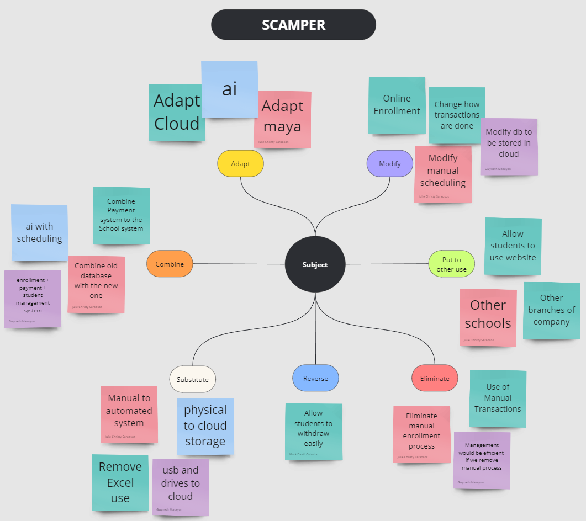

It is important to provide quality education to students and make it an inclusive and equitable educational environment. Schools need to implement a proper working system that is understandable to all to ensure a hassle-free experience for students and staff.
As we progress through the digital age, digital solutions have started to be incorporated into educational systems to facilitate effective learning, teaching, enrolling, and student monitoring. However, there are still some schools relying on traditional systems such as using pen and paper and a spreadsheet to manage student data. Although this approach still technically works, it is still time-consuming and flawed and will also be frustrating to the staff handling it.
Eduops aims to solve the issue of schools struggling to operate due to outdated systems. This would allow the administrators and teachers of this school to manage their students’ data in a much more efficient and user-friendly manner. Not only that, the life quality of students would significantly improve with a more easier way to manage their payments, schedules, and tracking of their classes.
This case study will tackle how Sprach Institut can upgrade its business model and school system by creating an information management system to blend technology with quality education. This would significantly improve the quality of the staff and administrators of the institute in managing their systems as well as creating a better educational environment for the students and future enrollees.
The purpose of this case study is to develop and implement an information management system called Eduops designed to streamline operations and improve the system at Sprach Institut.
Sprach Institut was facing challenges with their current system such as manual data management, enrollment processes, payments and class schedule which can be time-consuming and prone to errors. With the help of Eduops, Sprach Institut will be able to automate task and streamline data management, freeing up staff time for other initiatives. It’s a user-friendly platform that will improve communication and increase the satisfaction for staff and students.
Outdated or traditional educational system is a common problem that can negatively affect the efficiency and overall quality of education. This study aims to solve the following problems of an outdated system which include:
Research Questionnaire - conducted one-on-one interviews to gather information about the users.
After interviewing the user, we were able to gather various information about the users. We were able to know their background, goals, pain points, etc. With this information we created user personas on MIRO board.
To access our Miro file, Click here!
First Persona - Ms. Tricia Diaz, MD

Second Persona - Mr. John Carlo
After conducting the interview we have gathered the following insights:
In order to decide on which SDGs we would work on, we used a brainstorming map. With brainstorming we were able to share our different ideas that would help solve specific problems. After placing our ideas, we then voted on which SDG to focus on which is Quality Education. This map helped us organize our ideas and make it one.
Our group decided to use a fishbone diagram to identify the problem and its causes of the outdated educational management system. With this diagram we were able to see the relationship between the problem and its causes.

Our group decided to use a scamper map to organize our ideas for the possible features that would be able to meet the users’ needs. As a group, we were able to collaborate and decide on which features to add or not. Overall, with SCAMPER we were able to visualize the possible features of the system.
1. Login Screen
2. Register Screen
3. Home Page Screen (Student)
4. Home Page Screen (Teacher)
5. Home Page (Admin)
6. Enrollment Form Screen
7. Enrollment Status Screen
8. Enrollment: View Schedule Screen
9. Enrollment: View Schedule by Week Screen
10. Teaching Load Screen
11. Study Load Screen
12. Course Assignment Screen
13. Assessment Screen
14. Ledger Screen
15. Payment Screen
16. Payment Redirect Screen
17. User Profile Screen
18. Staff Register Screen
19. Enrollment Requests Screen
20. View User Accounts Screen
21. Manage User Screen
1. Login Page Screen
2. Student’s Register Screen
3. Landing Page Screen
4. Enrollment Form Screen
5. Payment Screen
6. Payment Redirect Screen
7. Enrollment Status Screen
8. View Schedule Screen
9. Student Load Screen
10. Assessment Screen
11. Ledger Screen
12. User Profile Screen (Admin)
1. Login Page Screen
2. Home Page Screen
3. View Schedule Screen
4. Teaching Load Screen
5. User Profile Screen
1. Login Page Screen
2. Landing Page Screen
3. Staff Register Screen
4. View Schedule Screen
5. Course Assessment Screen
6. Enrollment Request Screen
7. View Accounts Screen
8. Manage Account Screen
9. User Profile Screen
Our team used Figma in the creation of our prototypes as our UI design tool. This would allow us to have real-time collaboration on our project as well as rapidly see outputs and make fixes and changes as our system is slowly being built upon..
Below is the lo-fi prototype of Eduops which composes of sketches ang placeholders of images and descriptions which serves as the draft blueprint of our system for the system vision our company had in mind for our system together with the arrows which would serve as the guides regarding the navigation flow for all the different types of users.


After creating the lo-fi prototype, our team proceeded in designing the hi-fi version of it. Here, colors, pictures, a working navigation for all the users, and a most accurate final design in terms of details and functionality. This would serve as the actual blueprint for the system and what it would feel like when it would be used by the users.
Below is the hifi-prototype of Eduops. You may interact with the buttons and switch flows between the different users.
In conclusion, the case study allowed the team to explore the design process and properly design the system to achieve its primary goal of improving and giving quality education to the beneficiaries. Through multiple design thinking principles, the team was able to uncover new ideas and solve problems that would arise throughout the various stages of designing the system. Hence, it is always important to be flexible and open-minded so that everyone can consider each other's ideas. After designing Eduops, the team is hopeful that it would successfully improve the client's processes of their institution by providing them convenient access to information and efficient support in teaching and learning practices through the designed system.